Automated profiling, diagnosis, evidence-aware recommendations, cleaning validation, visualization, machine learning, and prediction summary.
Overall quality score after approved cleaning actions.
Improvement: 14.36| Metric | Before | After | Meaning |
|---|---|---|---|
| Missing Values | 634 | 111 | Resolved 523 |
| Duplicate Rows | 33 | 0 | Removed 33 |
| Rows | 5035 | 5002 | Removed 33 |
| Columns | 28 | 28 | No structural column loss |
No merge or concatenation operation was recorded.
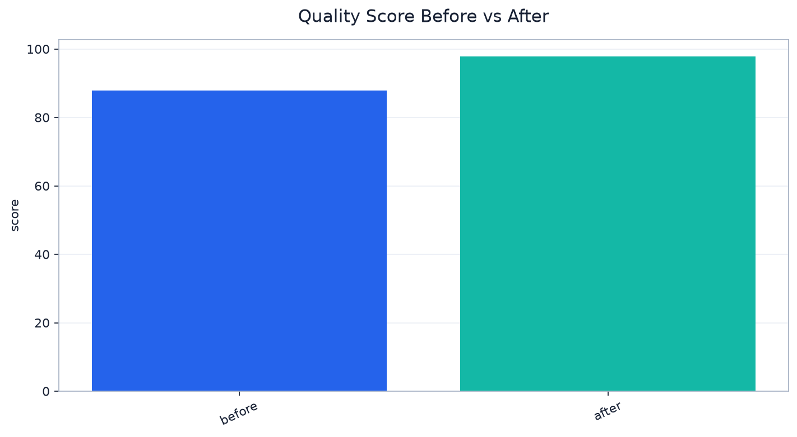
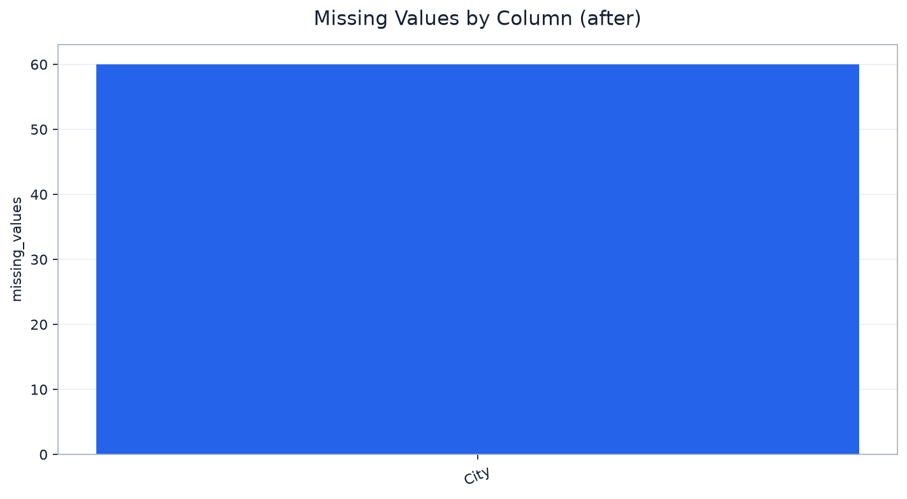
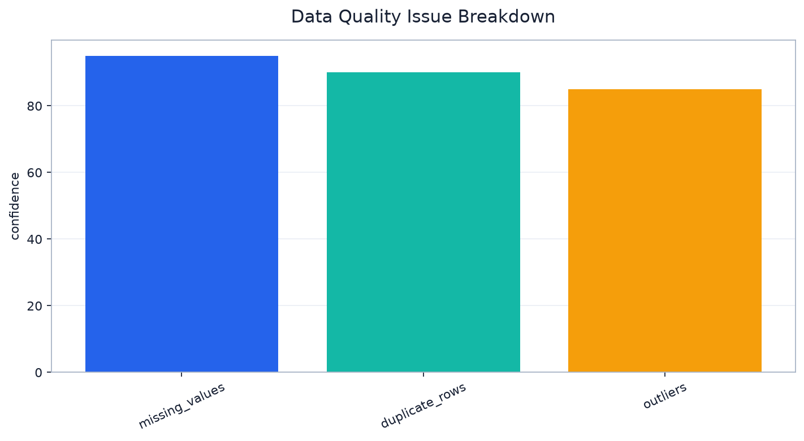
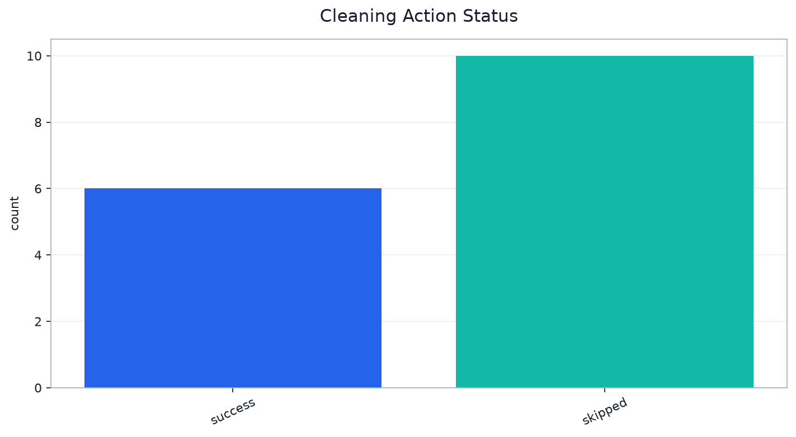
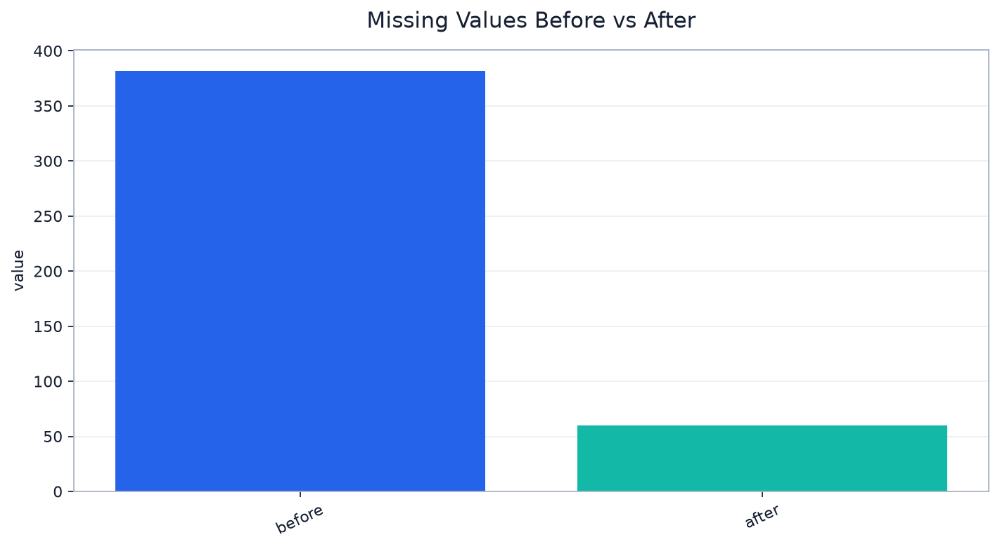
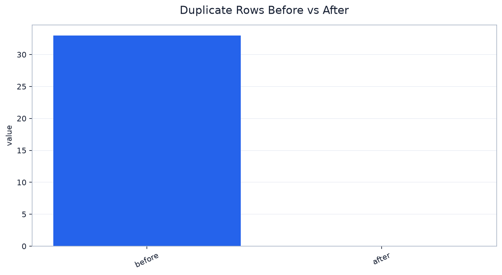
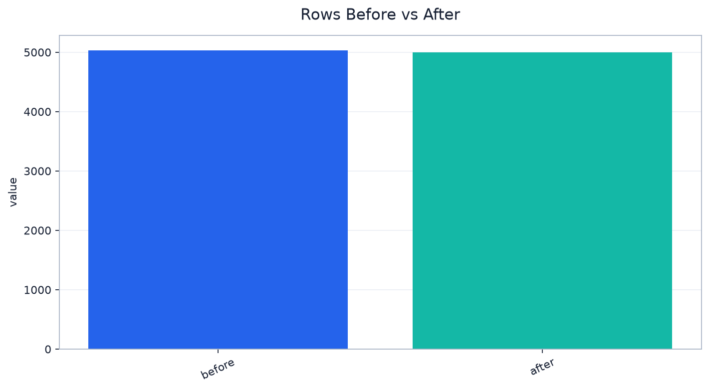
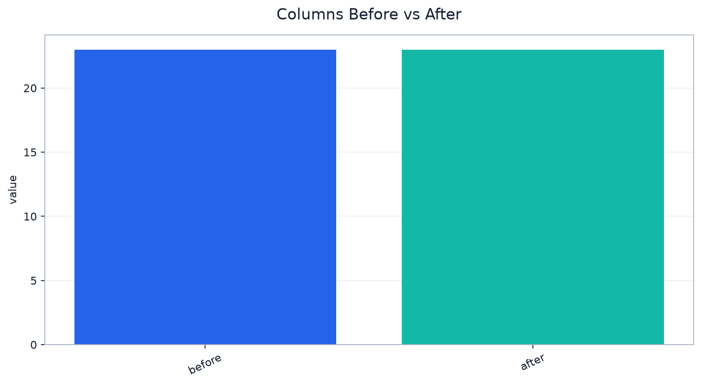
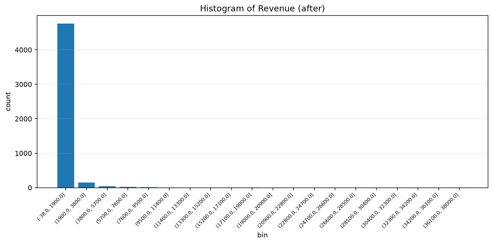
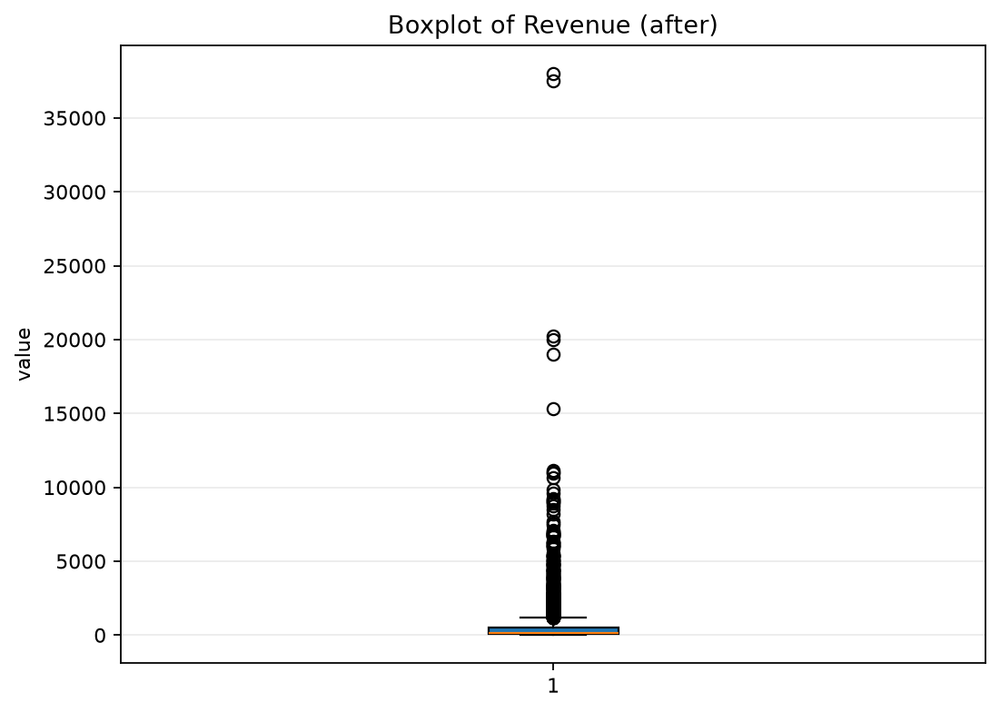
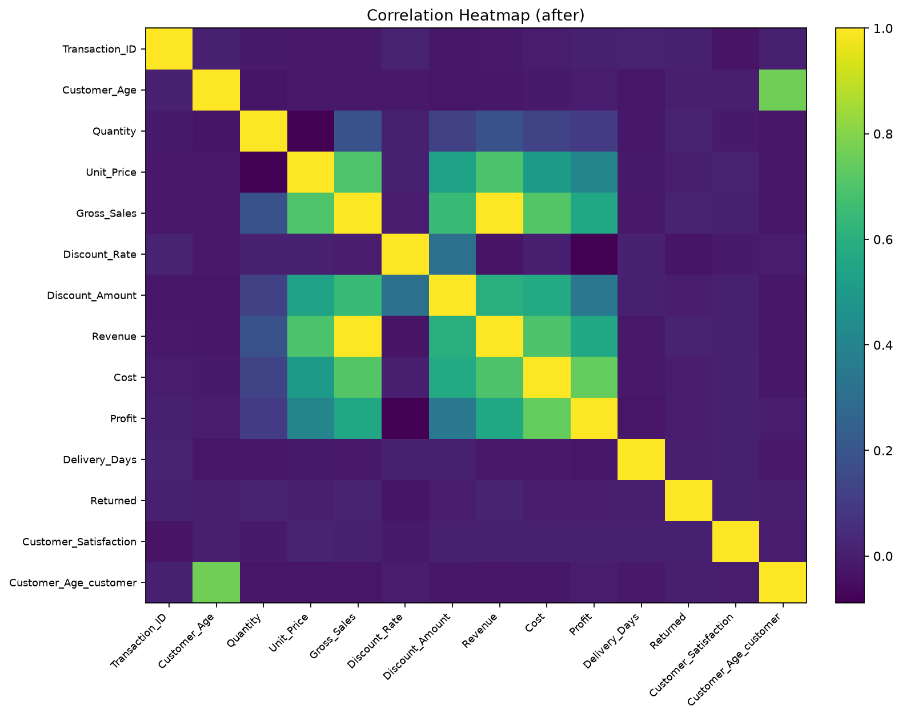
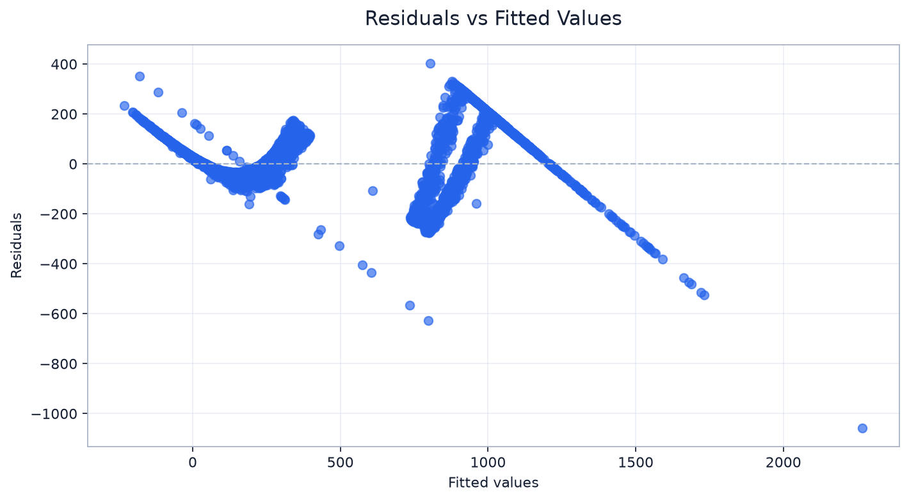
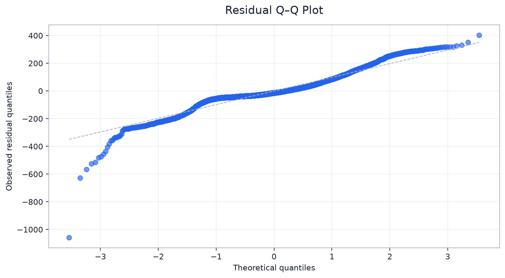
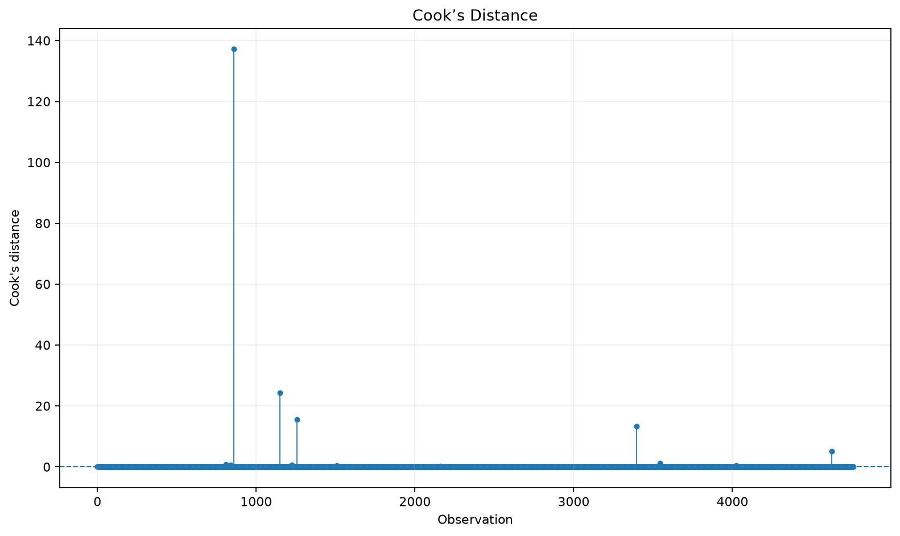
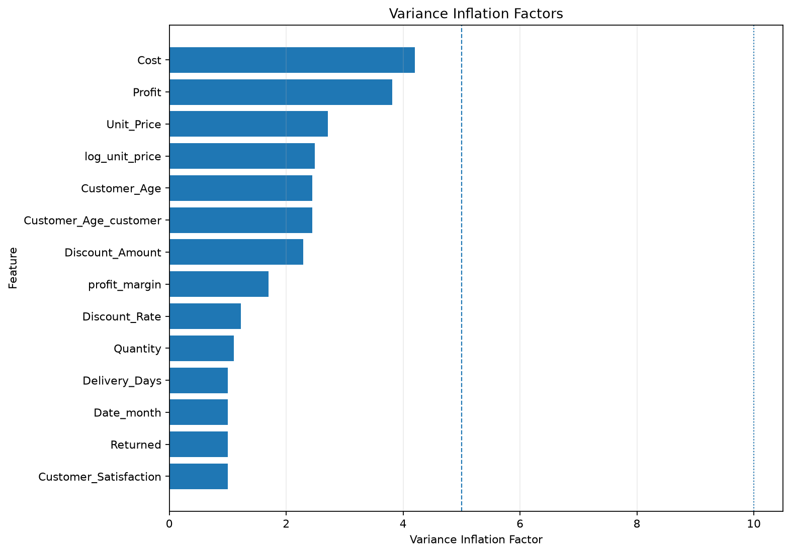
Unsupported chart preview.
Unsupported chart preview.
Unsupported chart preview.
Unsupported chart preview.
Unsupported chart preview.
Unsupported chart preview.
Unsupported chart preview.
| Feature | VIF | Severity | Interpretation | Recommendation |
|---|---|---|---|---|
| Cost | 4.1969 | Low | No major multicollinearity concern. | The feature can generally remain in the model. |
| Profit | 3.8132 | Low | No major multicollinearity concern. | The feature can generally remain in the model. |
| Unit_Price | 2.7099 | Low | No major multicollinearity concern. | The feature can generally remain in the model. |
| log_unit_price | 2.489 | Low | No major multicollinearity concern. | The feature can generally remain in the model. |
| Customer_Age | 2.4469 | Low | No major multicollinearity concern. | The feature can generally remain in the model. |
| Customer_Age_customer | 2.4459 | Low | No major multicollinearity concern. | The feature can generally remain in the model. |
| Discount_Amount | 2.2875 | Low | No major multicollinearity concern. | The feature can generally remain in the model. |
| profit_margin | 1.6983 | Low | No major multicollinearity concern. | The feature can generally remain in the model. |
| Discount_Rate | 1.2276 | Low | No major multicollinearity concern. | The feature can generally remain in the model. |
| Quantity | 1.1081 | Low | No major multicollinearity concern. | The feature can generally remain in the model. |
| Delivery_Days | 1.0036 | Low | No major multicollinearity concern. | The feature can generally remain in the model. |
| Date_month | 1.0025 | Low | No major multicollinearity concern. | The feature can generally remain in the model. |
| Returned | 1.0014 | Low | No major multicollinearity concern. | The feature can generally remain in the model. |
| Customer_Satisfaction | 1.001 | Low | No major multicollinearity concern. | The feature can generally remain in the model. |
Practical corrective actions generated from the BLUE assumption tests, visual insights, and VIF results.
| # | Action | Category | Priority | Reason | Recommendation | Confidence | Related Assumptions |
|---|---|---|---|---|---|---|---|
| 1 | Use robust standard errors | Inference | High | The Breusch-Pagan test detected non-constant residual variance. | Use HC3 heteroscedasticity-robust standard errors for coefficient inference. Weighted least squares may also be appropriate when a variance structure can be estimated. | 95.0% | Homoscedasticity |
| 2 | Transform the target or use robust regression | Transformation | High | Residuals significantly deviate from normality. | Consider log1p, Box-Cox, or Yeo-Johnson transformation of the target. Also review extreme values and robust regression alternatives. | 90.0% | Residual Normality |
| 3 | Review influential observations | Data Review | Medium | 88 row(s), representing 1.848% of analyzed data, may strongly influence the fitted coefficients. | Inspect these rows for data errors, unusual groups, or valid extreme cases. Compare model results with and without them and consider robust regression. | 90.0% | Influential Observations |
| Row | Actual | Predicted | Residual | Abs Error | % Error | Confidence | Most Important Features |
|---|---|---|---|---|---|---|---|
| 0 | 89.11 | 90.141 | -1.031 | 1.031 | 1.157 | 98.84% | Quantity, log_unit_price, Unit_Price |
| 1 | 284.09 | 284.8416 | -0.7516 | 0.7516 | 0.2646 | 98.9% | Quantity, log_unit_price, Unit_Price |
| 2 | 31.98 | 31.7942 | 0.1858 | 0.1858 | 0.581 | 98.9% | Quantity, log_unit_price, Unit_Price |
| 3 | 199.58 | 200.3891 | -0.8091 | 0.8091 | 0.4054 | 98.9% | Quantity, log_unit_price, Unit_Price |
| 4 | 209.53 | 211.1849 | -1.6549 | 1.6549 | 0.7898 | 98.9% | Quantity, log_unit_price, Unit_Price |
| 5 | 37.6 | 37.8676 | -0.2676 | 0.2676 | 0.7117 | 98.9% | Quantity, log_unit_price, Unit_Price |
| 6 | 168.62 | 165.0722 | 3.5478 | 3.5478 | 2.104 | 97.9% | Quantity, log_unit_price, Unit_Price |
| 7 | 83.0 | 83.2689 | -0.2689 | 0.2689 | 0.324 | 98.9% | Quantity, log_unit_price, Unit_Price |
| 8 | 10.22 | 10.8813 | -0.6613 | 0.6613 | 6.4706 | 93.53% | Quantity, log_unit_price, Unit_Price |
| 9 | 5065.55 | 4938.8283 | 126.7217 | 126.7217 | 2.5016 | 97.5% | Quantity, log_unit_price, Unit_Price |
| 10 | 143.3 | 143.0814 | 0.2186 | 0.2186 | 0.1525 | 98.9% | Quantity, log_unit_price, Unit_Price |
| 11 | 239.42 | 237.7151 | 1.7049 | 1.7049 | 0.7121 | 98.9% | Quantity, log_unit_price, Unit_Price |
| 12 | 192.53 | 192.4655 | 0.0645 | 0.0645 | 0.0335 | 98.9% | Quantity, log_unit_price, Unit_Price |
| 13 | 9.49 | 10.0921 | -0.6021 | 0.6021 | 6.3446 | 93.66% | Quantity, log_unit_price, Unit_Price |
| 14 | 249.49 | 249.6594 | -0.1694 | 0.1694 | 0.0679 | 98.9% | Quantity, log_unit_price, Unit_Price |
| 15 | 1346.29 | 1305.775 | 40.515 | 40.515 | 3.0094 | 96.99% | Quantity, log_unit_price, Unit_Price |
| 16 | 92.68 | 93.2932 | -0.6132 | 0.6132 | 0.6616 | 98.9% | Quantity, log_unit_price, Unit_Price |
| 17 | 44.62 | 46.5668 | -1.9468 | 1.9468 | 4.3631 | 95.64% | Quantity, log_unit_price, Unit_Price |
| 18 | 107.39 | 107.6243 | -0.2343 | 0.2343 | 0.2182 | 98.9% | Quantity, log_unit_price, Unit_Price |
| 19 | 135.35 | 129.3347 | 6.0153 | 6.0153 | 4.4443 | 95.56% | Quantity, log_unit_price, Unit_Price |
| Row | Prediction | Base Value | Top Contributions | Increasing Features | Decreasing Features | Explanation |
|---|---|---|---|---|---|---|
| 0 | 90.141 | 509.994 |
- Quantity
= 1.0
| SHAP: -205.639862
(48.52%)
- log_unit_price
= 4.661834033105633
| SHAP: -110.193117
(26.0%)
- Unit_Price
= 104.83
| SHAP: -86.985266
(20.53%)
- Discount_Rate
= 0.15
| SHAP: -13.765529
(3.25%)
- Delivery_Days
= 4.0
| SHAP: -0.236191
(0.06%)
|
- | Quantity, log_unit_price, Unit_Price | The model predicted 90.14099999999995. The strongest decreasing influences were Quantity, log_unit_price, Unit_Price. |
| 1 | 284.8416 | 509.994 |
+ Quantity
= 5.0
| SHAP: 345.825521
(36.51%)
- log_unit_price
= 4.160912273160772
| SHAP: -290.085277
(30.62%)
- Unit_Price
= 63.13
| SHAP: -279.578602
(29.51%)
+ Product_Category_Clothing
= 1.0
| SHAP: 9.117354
(0.96%)
- Discount_Rate
= 0.1
| SHAP: -6.996046
(0.74%)
|
Quantity, Product_Category_Clothing | log_unit_price, Unit_Price, Discount_Rate | The model predicted 284.8416000000001. The strongest increasing influences were Quantity, Product_Category_Clothing. The strongest decreasing influences were log_unit_price, Unit_Price, Discount_Rate. |
| 2 | 31.7942 | 509.994 |
- log_unit_price
= 2.8326249356838407
| SHAP: -229.333684
(45.79%)
- Unit_Price
= 15.99
| SHAP: -220.685874
(44.06%)
- Quantity
= 2.0
| SHAP: -34.434389
(6.88%)
+ Discount_Rate
= 0.0
| SHAP: 9.108935
(1.82%)
+ Customer_Satisfaction
= 5.0
| SHAP: 0.45207
(0.09%)
|
Discount_Rate, Customer_Satisfaction | log_unit_price, Unit_Price, Quantity | The model predicted 31.79420000000001. The strongest increasing influences were Discount_Rate, Customer_Satisfaction. The strongest decreasing influences were log_unit_price, Unit_Price, Quantity. |
| 3 | 200.3891 | 509.994 |
+ Quantity
= 12.0
| SHAP: 773.637717
(41.11%)
- log_unit_price
= 2.969388298214389
| SHAP: -559.439097
(29.73%)
- Unit_Price
= 18.48
| SHAP: -521.042238
(27.69%)
- Discount_Rate
= 0.1
| SHAP: -3.976364
(0.21%)
+ Customer_Age_customer
= 52.0
| SHAP: 2.144545
(0.11%)
|
Quantity, Customer_Age_customer | log_unit_price, Unit_Price, Discount_Rate | The model predicted 200.3891000000001. The strongest increasing influences were Quantity, Customer_Age_customer. The strongest decreasing influences were log_unit_price, Unit_Price, Discount_Rate. |
| 4 | 211.1849 | 509.994 |
- log_unit_price
= 4.311067545733388
| SHAP: -206.869476
(42.06%)
- Unit_Price
= 73.52
| SHAP: -182.511168
(37.11%)
+ Quantity
= 3.0
| SHAP: 87.157548
(17.72%)
+ Discount_Rate
= 0.05
| SHAP: 4.920501
(1.0%)
+ Product_Category_Clothing
= 1.0
| SHAP: 1.472091
(0.3%)
|
Quantity, Discount_Rate, Product_Category_Clothing | log_unit_price, Unit_Price | The model predicted 211.18489999999997. The strongest increasing influences were Quantity, Discount_Rate, Product_Category_Clothing. The strongest decreasing influences were log_unit_price, Unit_Price. |
| 5 | 37.8676 | 509.994 |
- Quantity
= 1.0
| SHAP: -165.903395
(34.72%)
- log_unit_price
= 3.7560707036542595
| SHAP: -154.256579
(32.28%)
- Unit_Price
= 41.78
| SHAP: -146.707829
(30.7%)
- Discount_Rate
= 0.1
| SHAP: -3.535044
(0.74%)
+ Product_Category_Beauty
= 1.0
| SHAP: 0.757843
(0.16%)
|
Product_Category_Beauty | Quantity, log_unit_price, Unit_Price | The model predicted 37.86759999999995. The strongest increasing influences were Product_Category_Beauty. The strongest decreasing influences were Quantity, log_unit_price, Unit_Price. |
| 6 | 165.0722 | 509.994 |
- log_unit_price
= 3.597312260588446
| SHAP: -330.938247
(33.5%)
- Unit_Price
= 35.5
| SHAP: -323.788598
(32.78%)
+ Quantity
= 5.0
| SHAP: 310.841884
(31.47%)
+ Discount_Rate
= 0.05
| SHAP: 4.999032
(0.51%)
- Product_Laptop
= 0.0
| SHAP: -0.937881
(0.09%)
|
Quantity, Discount_Rate | log_unit_price, Unit_Price, Product_Laptop | The model predicted 165.07220000000027. The strongest increasing influences were Quantity, Discount_Rate. The strongest decreasing influences were log_unit_price, Unit_Price, Product_Laptop. |
| 7 | 83.2689 | 509.994 |
- log_unit_price
= 3.85248529271195
| SHAP: -190.11844
(43.67%)
- Unit_Price
= 46.11
| SHAP: -180.98932
(41.57%)
- Quantity
= 2.0
| SHAP: -49.685794
(11.41%)
- Discount_Rate
= 0.1
| SHAP: -5.323358
(1.22%)
+ Product_Category_Clothing
= 1.0
| SHAP: 1.474278
(0.34%)
|
Product_Category_Clothing | log_unit_price, Unit_Price, Quantity | The model predicted 83.26889999999999. The strongest increasing influences were Product_Category_Clothing. The strongest decreasing influences were log_unit_price, Unit_Price, Quantity. |
| 8 | 10.8813 | 509.994 |
- log_unit_price
= 2.464703942470481
| SHAP: -184.015396
(36.09%)
- Unit_Price
= 10.76
| SHAP: -177.368621
(34.78%)
- Quantity
= 1.0
| SHAP: -138.599436
(27.18%)
+ Discount_Rate
= 0.05
| SHAP: 3.169803
(0.62%)
+ Customer_Age
= 18.0
| SHAP: 0.385338
(0.08%)
|
Discount_Rate, Customer_Age | log_unit_price, Unit_Price, Quantity | The model predicted 10.8813. The strongest increasing influences were Discount_Rate, Customer_Age. The strongest decreasing influences were log_unit_price, Unit_Price, Quantity. |
| 9 | 4938.8283 | 509.994 |
+ Quantity
= 5.0
| SHAP: 1730.756511
(38.06%)
+ log_unit_price
= 6.921766659529789
| SHAP: 1302.479367
(28.64%)
+ Unit_Price
= 1013.11
| SHAP: 1246.336691
(27.41%)
+ Customer_Age
= 20.0
| SHAP: 39.502892
(0.87%)
+ Discount_Rate
= 0.0
| SHAP: 33.632294
(0.74%)
|
Quantity, log_unit_price, Unit_Price | - | The model predicted 4938.828299999995. The strongest increasing influences were Quantity, log_unit_price, Unit_Price. |
| Issue | Severity | Confidence |
|---|---|---|
| missing_values | low | 95.0% |
| duplicate_rows | low | 90.0% |
| outliers | medium | 85.0% |
| # | Issue | Strategy | Columns | Confidence | Reason |
|---|---|---|---|---|---|
| 1 | missing_values | median | Customer_Age | 88.0% | Diagnosis detected missing values in Customer_Age. Knowledge rule 'age' recommends median imputation. Statistics show mean=35.9423 and median=36.0. |
| 2 | missing_values | mode | Region | 80.0% | Diagnosis detected missing values in Region. Knowledge rule 'region' recommends mode imputation. |
| 3 | missing_values | review_missing_values | City | 70.0% | Diagnosis detected missing values in City. |
| 4 | missing_values | median | Revenue | 97.0% | Diagnosis detected missing values in Revenue. Knowledge rule 'revenue' recommends median imputation. Statistics show mean=507.4374 and median=169.34. Interpretation: The mean is substantially above the median, suggesting an asymmetric distribution. Interpretation: Revenue appears... |
| 5 | missing_values | median | Customer_Satisfaction | 81.0% | Diagnosis detected missing values in Customer_Satisfaction. Statistics show mean=3.923 and median=4.0. Interpretation: Customer_Satisfaction appears left-skewed. Small values may be pulling the mean downward. |
| 6 | missing_values | median | Customer_Age_customer | 88.0% | Diagnosis detected missing values in Customer_Age_customer. Knowledge rule 'age' recommends median imputation. Statistics show mean=35.8877 and median=36.0. |
| 7 | missing_values | mode | Region_customer | 80.0% | Diagnosis detected missing values in Region_customer. Knowledge rule 'region' recommends mode imputation. |
| 8 | missing_values | review_missing_values | City_customer | 70.0% | Diagnosis detected missing values in City_customer. |
| 9 | duplicate_rows | remove_exact_duplicates | - | 92.0% | Diagnosis detected exact duplicate rows. Exact duplicates can inflate counts, distort totals, and bias analysis. |
| 10 | outliers | domain_range_check | Customer_Age | 86.0% | Diagnosis detected outlier behavior in Customer_Age. Knowledge rule 'age' recommends domain_range_check. Statistics show skewness=0.4479 and kurtosis=0.7825. |
| 11 | outliers | review_or_cap | Quantity | 96.0% | Diagnosis detected outlier behavior in Quantity. Knowledge rule 'quantity' recommends review_or_cap. Statistics show skewness=17.1418 and kurtosis=408.8754. Interpretation: Quantity appears right-skewed. Large values may be pulling the mean upward. Interpretation: Quantity has he... |
| 12 | outliers | review_or_winsorize | Unit_Price | 96.0% | Diagnosis detected outlier behavior in Unit_Price. Knowledge rule 'unit_price' recommends review_or_winsorize. Statistics show skewness=8.702 and kurtosis=184.8562. Interpretation: Unit_Price appears right-skewed. Large values may be pulling the mean upward. Interpretation: Unit_... |
| 13 | outliers | review_or_treat_outliers | Gross_Sales | 86.0% | Diagnosis detected outlier behavior in Gross_Sales. Statistics show skewness=12.6195 and kurtosis=270.8405. Interpretation: Gross_Sales appears right-skewed. Large values may be pulling the mean upward. Interpretation: Gross_Sales has heavy-tailed behavior, suggesting extreme val... |
| 14 | outliers | domain_range_check | Discount_Rate | 96.0% | Diagnosis detected outlier behavior in Discount_Rate. Knowledge rule 'discount' recommends domain_range_check. Statistics show skewness=2.1336 and kurtosis=16.6757. Interpretation: Discount_Rate appears right-skewed. Large values may be pulling the mean upward. Interpretation: Di... |
| 15 | outliers | domain_range_check | Discount_Amount | 96.0% | Diagnosis detected outlier behavior in Discount_Amount. Knowledge rule 'discount' recommends domain_range_check. Statistics show skewness=8.8036 and kurtosis=113.0272. Interpretation: Discount_Amount appears right-skewed. Large values may be pulling the mean upward. Interpretatio... |
| 16 | outliers | review_or_winsorize | Revenue | 96.0% | Diagnosis detected outlier behavior in Revenue. Knowledge rule 'revenue' recommends review_or_winsorize. Statistics show skewness=13.224 and kurtosis=295.8814. Interpretation: Revenue appears right-skewed. Large values may be pulling the mean upward. Interpretation: Revenue has h... |
| 17 | outliers | review_or_treat_outliers | Cost | 86.0% | Diagnosis detected outlier behavior in Cost. Statistics show skewness=5.5726 and kurtosis=43.045. Interpretation: Cost appears right-skewed. Large values may be pulling the mean upward. Interpretation: Cost has heavy-tailed behavior, suggesting extreme values may strongly influen... |
| 18 | outliers | review_or_winsorize | Profit | 96.0% | Diagnosis detected outlier behavior in Profit. Knowledge rule 'profit' recommends review_or_winsorize. Statistics show skewness=11.164 and kurtosis=245.3158. Interpretation: Profit appears right-skewed. Large values may be pulling the mean upward. Interpretation: Profit has heavy... |
| 19 | outliers | review_or_treat_outliers | Delivery_Days | 79.0% | Diagnosis detected outlier behavior in Delivery_Days. Statistics show skewness=0.8642 and kurtosis=0.6586. Interpretation: Delivery_Days appears right-skewed. Large values may be pulling the mean upward. |
| 20 | outliers | domain_range_check | Customer_Age_customer | 86.0% | Diagnosis detected outlier behavior in Customer_Age_customer. Knowledge rule 'age' recommends domain_range_check. Statistics show skewness=0.3601 and kurtosis=0.2159. |
| Action | Issue | Strategy | Status | Columns | Rows Before | Rows After | Message |
|---|---|---|---|---|---|---|---|
| 1 | missing_values | median | success | Customer_Age | 5035 | 5035 | Applied median missing-value handling. |
| 2 | missing_values | mode | success | Region | 5035 | 5035 | Applied mode missing-value handling. |
| 3 | missing_values | review_missing_values | success | City | 5035 | 5035 | Applied review_missing_values missing-value handling. |
| 4 | missing_values | median | success | Revenue | 5035 | 5035 | Applied median missing-value handling. |
| 5 | missing_values | median | success | Customer_Satisfaction | 5035 | 5035 | Applied median missing-value handling. |
| 6 | missing_values | median | success | Customer_Age_customer | 5035 | 5035 | Applied median missing-value handling. |
| 7 | missing_values | mode | success | Region_customer | 5035 | 5035 | Applied mode missing-value handling. |
| 8 | missing_values | review_missing_values | success | City_customer | 5035 | 5035 | Applied review_missing_values missing-value handling. |
| 9 | duplicate_rows | remove_exact_duplicates | success | - | 5035 | 5002 | Removed 33 duplicate row(s). |
| 10 | outliers | domain_range_check | skipped | Customer_Age | 5002 | 5002 | Strategy is not executable yet. Manual review required. |
| 11 | outliers | review_or_cap | skipped | Quantity | 5002 | 5002 | Strategy is not executable yet. Manual review required. |
| 12 | outliers | review_or_winsorize | skipped | Unit_Price | 5002 | 5002 | Strategy is not executable yet. Manual review required. |
| 13 | outliers | review_or_treat_outliers | skipped | Gross_Sales | 5002 | 5002 | Strategy is not executable yet. Manual review required. |
| 14 | outliers | domain_range_check | skipped | Discount_Rate | 5002 | 5002 | Strategy is not executable yet. Manual review required. |
| 15 | outliers | domain_range_check | skipped | Discount_Amount | 5002 | 5002 | Strategy is not executable yet. Manual review required. |
| 16 | outliers | review_or_winsorize | skipped | Revenue | 5002 | 5002 | Strategy is not executable yet. Manual review required. |
| 17 | outliers | review_or_treat_outliers | skipped | Cost | 5002 | 5002 | Strategy is not executable yet. Manual review required. |
| 18 | outliers | review_or_winsorize | skipped | Profit | 5002 | 5002 | Strategy is not executable yet. Manual review required. |
| 19 | outliers | review_or_treat_outliers | skipped | Delivery_Days | 5002 | 5002 | Strategy is not executable yet. Manual review required. |
| 20 | outliers | domain_range_check | skipped | Customer_Age_customer | 5002 | 5002 | Strategy is not executable yet. Manual review required. |